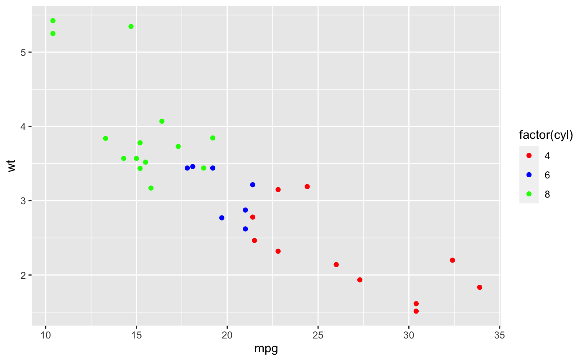
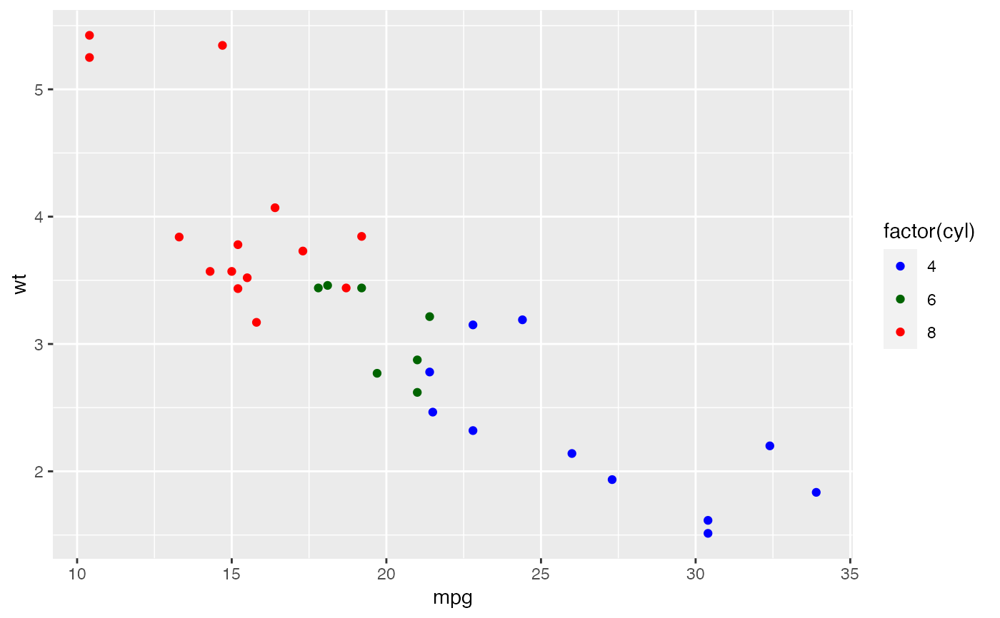
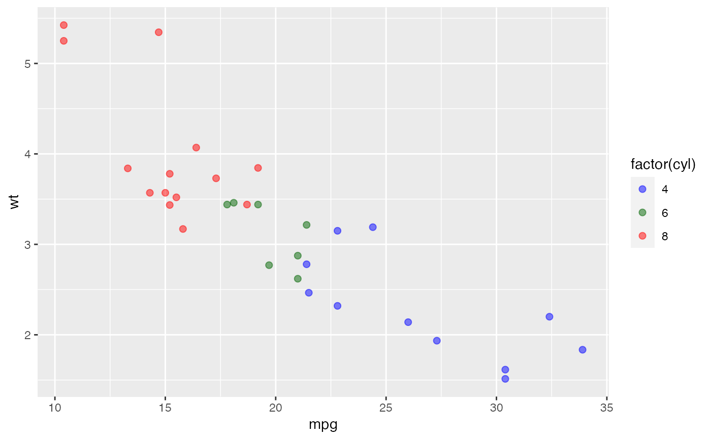
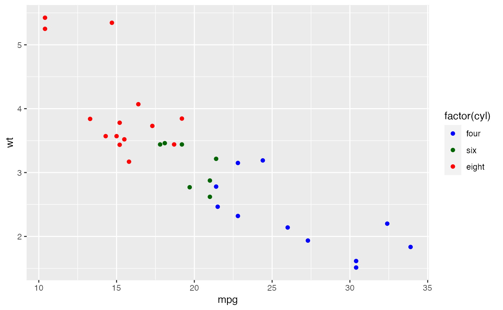
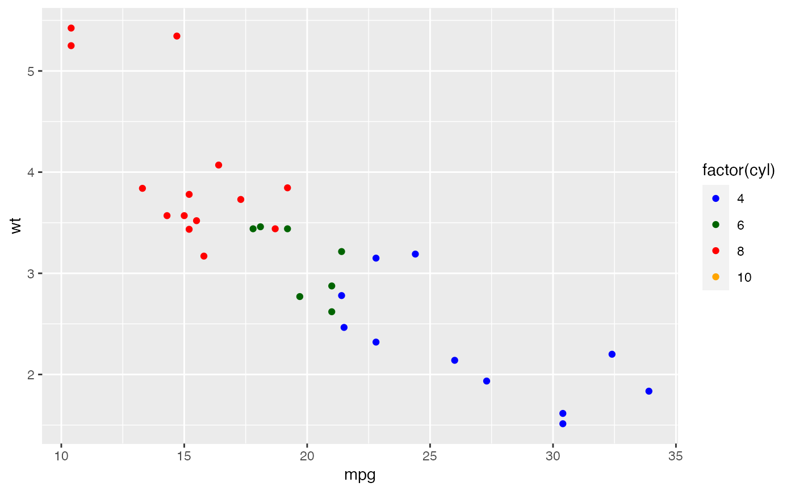

These functions allow you to specify your own set of mappings from levels in the data to aesthetic values.
scale_colour_manual(..., values, aesthetics = "colour", breaks = waiver()) scale_fill_manual(..., values, aesthetics = "fill", breaks = waiver()) scale_size_manual(..., values, breaks = waiver()) scale_shape_manual(..., values, breaks = waiver()) scale_linetype_manual(..., values, breaks = waiver()) scale_alpha_manual(..., values, breaks = waiver()) scale_discrete_manual(aesthetics, ..., values, breaks = waiver())
Arguments
| ... | Arguments passed on to
|
|---|---|
| values | a set of aesthetic values to map data values to. The values
will be matched in order (usually alphabetical) with the limits of the
scale, or with |
| aesthetics | Character string or vector of character strings listing the
name(s) of the aesthetic(s) that this scale works with. This can be useful, for
example, to apply colour settings to the |
| breaks | One of:
|
Details
The functions scale_colour_manual(), scale_fill_manual(), scale_size_manual(),
etc. work on the aesthetics specified in the scale name: colour, fill, size,
etc. However, the functions scale_colour_manual() and scale_fill_manual() also
have an optional aesthetics argument that can be used to define both colour and
fill aesthetic mappings via a single function call (see examples). The function
scale_discrete_manual() is a generic scale that can work with any aesthetic or set
of aesthetics provided via the aesthetics argument.
Color Blindness
Many color palettes derived from RGB combinations (like the "rainbow" color
palette) are not suitable to support all viewers, especially those with
color vision deficiencies. Using viridis type, which is perceptually
uniform in both colour and black-and-white display is an easy option to
ensure good perceptive properties of your visulizations.
The colorspace package offers functionalities
to generate color palettes with good perceptive properties,
to analyse a given color palette, like emulating color blindness,
and to modify a given color palette for better perceptivity.
For more information on color vision deficiencies and suitable color choices see the paper on the colorspace package and references therein.
Examples
p <- ggplot(mtcars, aes(mpg, wt)) + geom_point(aes(colour = factor(cyl))) p + scale_colour_manual(values = c("red", "blue", "green"))# It's recommended to use a named vector cols <- c("8" = "red", "4" = "blue", "6" = "darkgreen", "10" = "orange") p + scale_colour_manual(values = cols)# You can set color and fill aesthetics at the same time ggplot( mtcars, aes(mpg, wt, colour = factor(cyl), fill = factor(cyl)) ) + geom_point(shape = 21, alpha = 0.5, size = 2) + scale_colour_manual( values = cols, aesthetics = c("colour", "fill") )# As with other scales you can use breaks to control the appearance # of the legend. p + scale_colour_manual(values = cols)p + scale_colour_manual( values = cols, breaks = c("4", "6", "8"), labels = c("four", "six", "eight") )# And limits to control the possible values of the scale p + scale_colour_manual(values = cols, limits = c("4", "8"))#> Warning: Removed 7 rows containing missing values (geom_point).